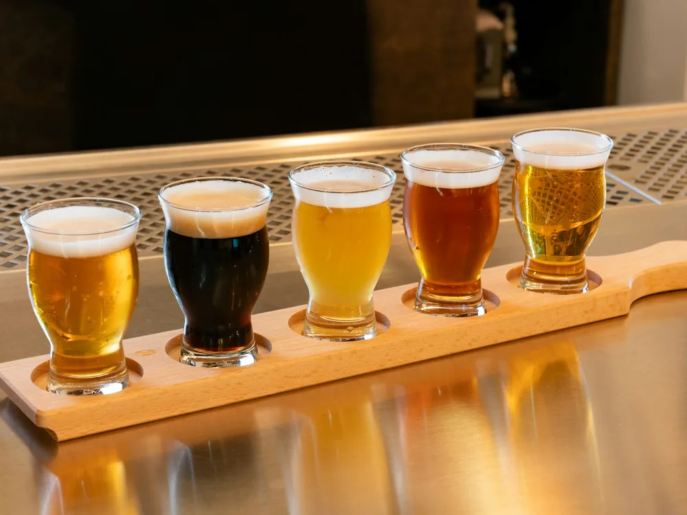
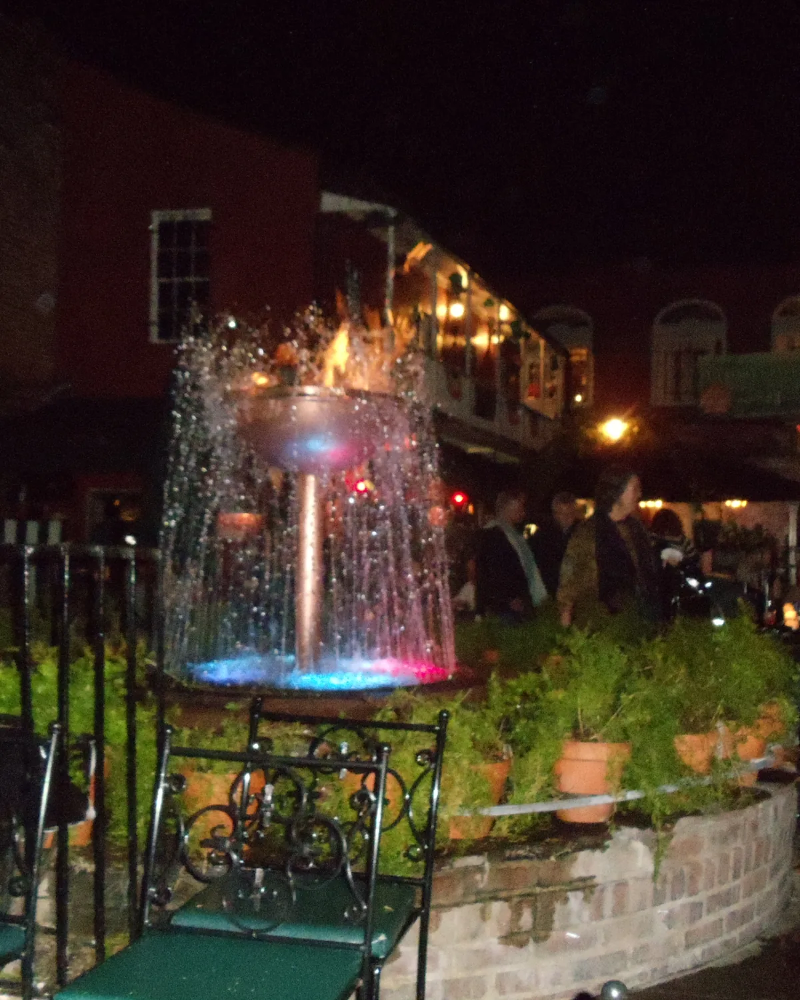
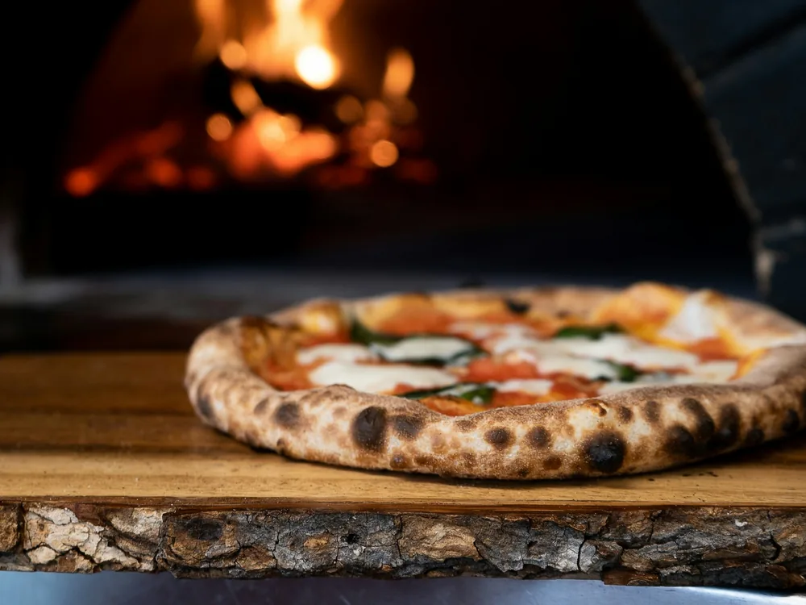
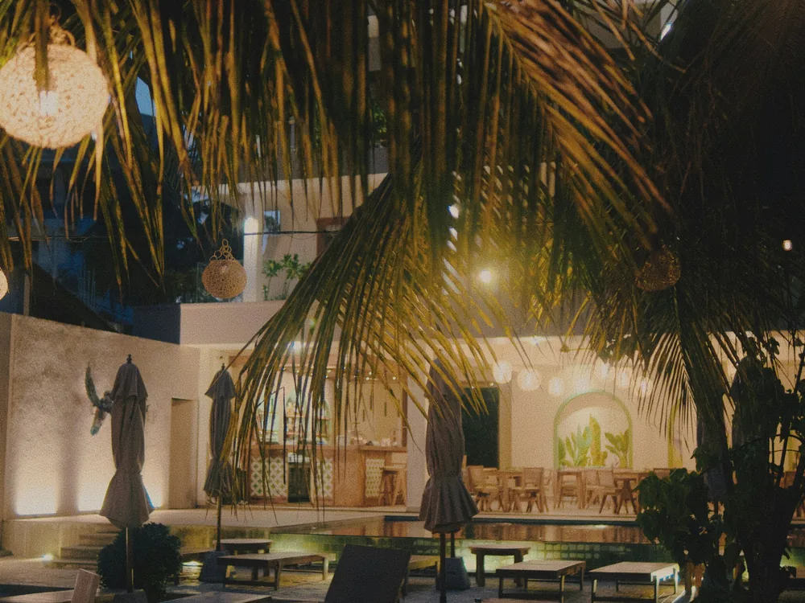
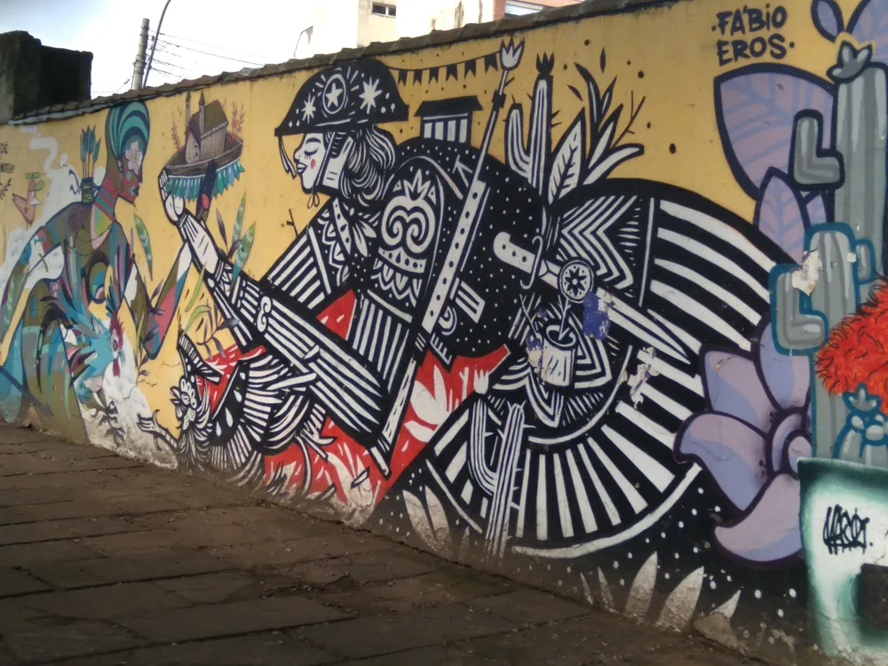
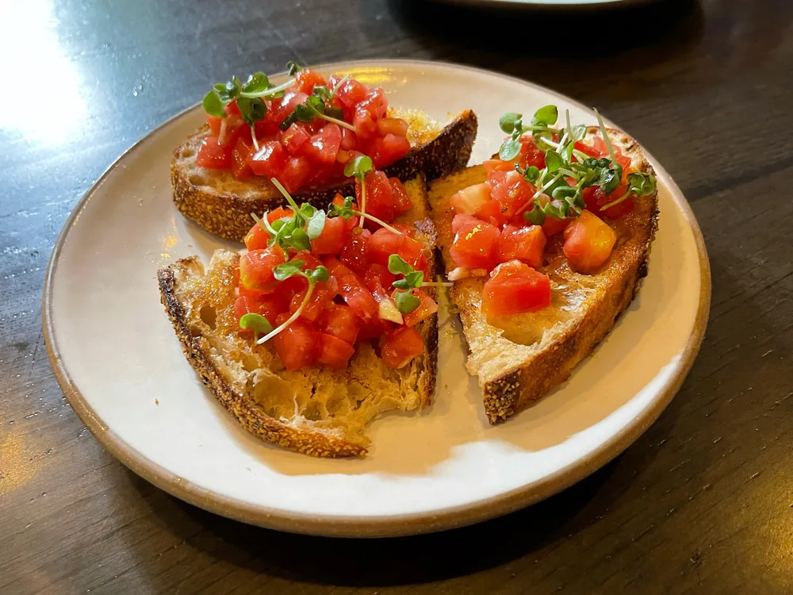

The bar
Dozens of craft and specialty beers, plus cocktails for the ones who came for something else.
Concept by George Mikaelson for A Virgem — not affiliated
Rua Olavo Bilac 251, Cidade Baixa
A two-storey house in Porto Alegre’s bar district. Craft beer and cocktails up front, pizza and bruschetta from the kitchen, a garden patio in the middle and a tattoo studio under the same roof.

Pick a room on the plan.

Dozens of craft and specialty beers, plus cocktails for the ones who came for something else.

Pizzas and bruschettas to share, escondidinho (there’s a vegetarian one) and desserts to finish.

The heart of the house: a big open-air patio with a garden, a pond and a pool. Where the after-work crowd ends up and stays.

A tattoo studio and street art on the walls. Book ink on one visit, come back for a beer on the next.
Comida di Buteco 2026
Our entry for the contest: sautéed spinach in a three-cheese sauce, with strips of toasted bread to drag through it.

Open every day.
Hours can change, so message us before a big group visit. Weekends get busy: come early.